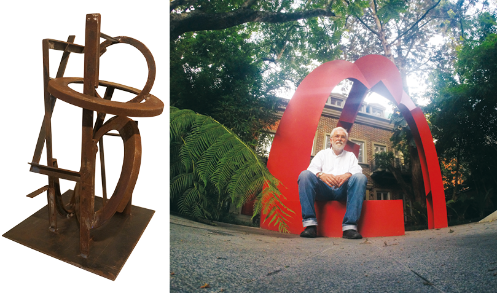
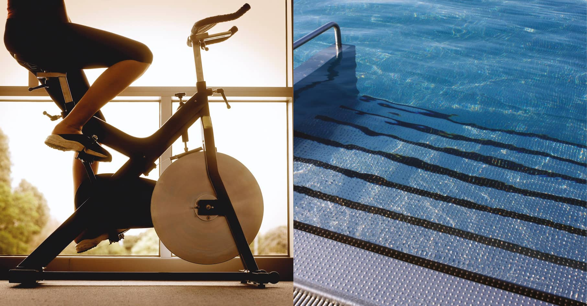

ITACA incluye espacios y sistemas que promueven la comodidad, convivencia y seguridad de sus residentes.
Cada ambiente genera un sentido de pertenencia y comodidad, en un contexto exclusivo.
ARTE
El artista Dennis Leder creó, a base de materiales industriales, una obra de 5x5 m de base y 10 m de altura que será parte de la plaza central del edificio.


AMENIDADES
Plaza de ingreso y jardín
Salón de usos múltiples con cocineta
Gimnasio equipado
Sala de yoga
Piscina
Sauna
Centro de negocios
Sala de lectura
Azotea verde (huerta)
Las torres cuentan con circulación vertical independiente y cada sótano dispone de entrada propia, parqueos amplios y una bodega por apartamento.
COMODIDADES PARA FUNCIONAMIENTO
Parqueo de visitas
Área de estar con servicios para pilotos y personal de seguridad
Área de estar con servicios para empleados
Oficina administrativa
Bodegas de limpieza y mantenimiento
SISTEMAS Y EQUIPOS
Planta eléctrica de emergencia
Central de monitoreo
Pozo propio
Red de gas con sistema de distribución para estufas y secadoras de ropa
Dos elevadores por torre, uno con cabina interna de 1x2 m y otro de 1x1.5 m*